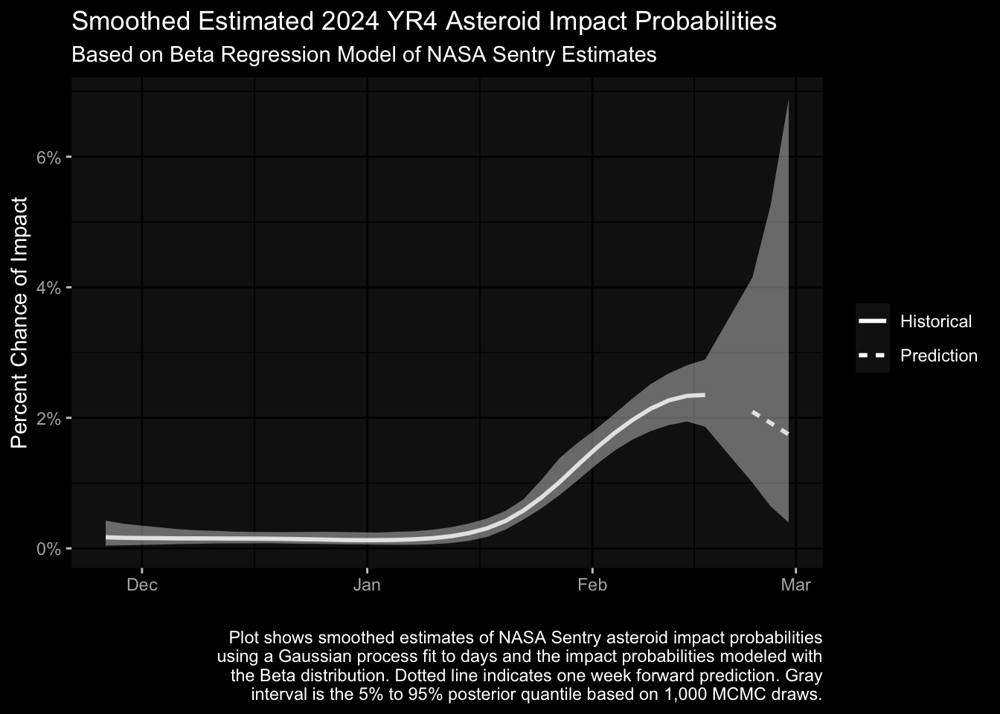
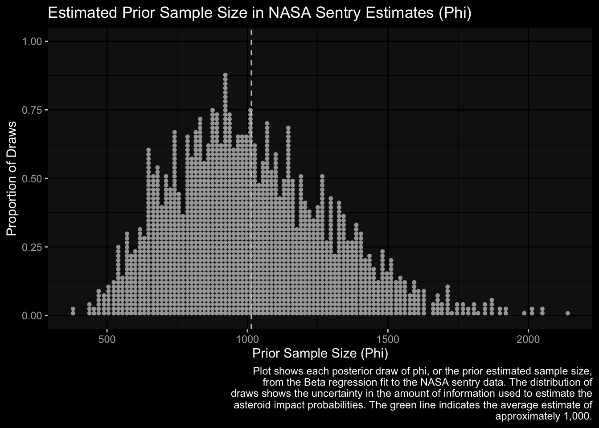
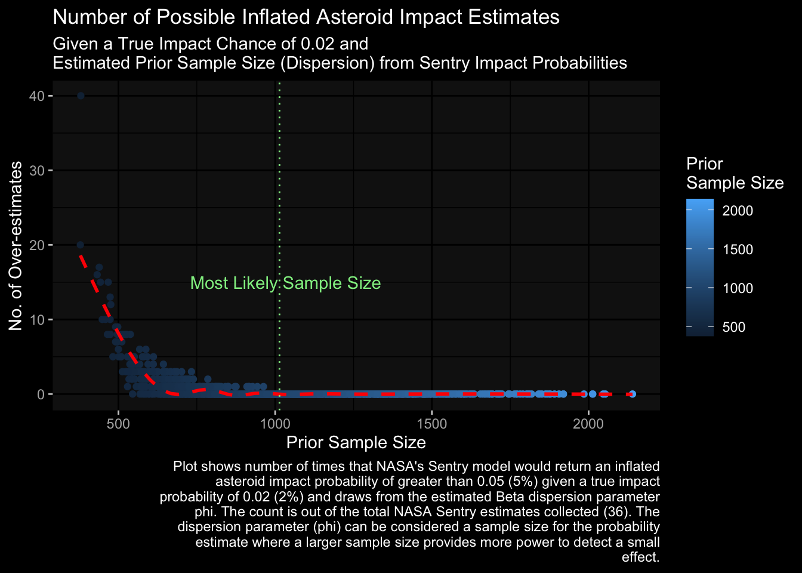

Read my latest on 5 lessons from political science to help rebuild Syria in The Conversation.
Modeling Uncertainty in NASA’s Asteroid Impact Predictions with the Beta Distribution
It’s Not Rocket Science… Or Is It?
I use brms, Gaussian processes, and a time-varying beta distribution to model the uncertainty in how NASA’s impact probabilities for the asteroid 2024 YR4 are changing over time.
R
Astrophysics
Proportions
Beta Regression
Author
Robert Kubinec
Published
February 18, 2025
The potential impact of asteroid 2024 YR4 has made major news headlines because it is one of the largest asteroids (possibly a few hundred feet across) to have a high chance of hitting Earth—at least according to NASA records. For more background, see this helpful NASA blog post.
I am writing this post because I have noticed that NASA’s impact probabilities, which are put out by the NASA Sentry system, vary over time—but they only share a single probability estimate for any given day. This is problematic because sharing a single number suggests over-confidence—i.e., how can the probability be so exact yet change from day to day? I believe this issue is due to unmodeled variation—essentially, NASA measurement error—that isn’t included in the estimates and can lead the public to become alarmed about noisy movements in these probabilities.
I started writing this post a few days ago when NASA released a much larger number than it had previously—a chance of 2.6%. However, as of today (February 20th, 2025), the number has dropped back down to 1.5%–or almost half as probable. These are big shifts, and I think NASA can do better by providing estimates with uncertainty, that is, by giving a range of estimates of asteroid impacts rather than a single, overly-precise, number.
To help calculate the noise in NASA‚Äôs estimates, I employ the Beta distribution‚Äîa distribution of probabilities‚Äîalong with Bayesian modeling tools with R. One cool thing is that all of the R packages I use were created by social scientists, which shows that ‚Äúhard‚Äù science is a myth. Even NASA can learn from social science üôå.
The code for all the analyses in this document, and if you want all the code & data, please see my Github repo.
Given how important this topic is, I will keep auto-updating this post with new data as it comes in from Sentry. If you just want to hop down to the current model estimates with a 10-day future prediction of asteroid impact probablities, just click here.
Background: The Problem with Asteroids
Before getting into the meat of the analysis, I want to be clear that I am not saying that NASA is bad at modeling asteroids. Frankly, I’m a political scientist, so it’s really not my place to even say if they are doing things like orbital mechanics right. Rather, the issue I am addressing has to do with how we understand uncertainty. This is an issue that is equally important in the social sciences and “hard” sciences regardless of where we collect our data from.
In addition, NASA makes it possible for me to do this analysis because it is very transparent about how it calculates asteroid impact probabilities. The current system it uses, Sentry, is based on this published paper: https://iopscience.iop.org/article/10.3847/1538-3881/ac193f, which is open access (as it should be). Anyone can download it and get into the nitty gritty.
I won‚Äôt get too into the weeds as that is not my aim, but I did have chatGPT convert some of the math of their model into an R-based simulation (click the ‚ÄúShow the code‚Äù button below this paragraph üëá). This simulation is considerably simplified but shows the basics of how NASA tries to simulate an asteroid‚Äôs impact as a set of ordinary differential equations. As described in the paper, NASA Sentry uses Monte Carlo techniques, that is, they use some random noise to see all the paths an asteroid might take, and then their estimate of probability of impact is determined by the number of paths that intersect Earth üòÖ.
Show the code
library(deSolve) # For numerical integrationlibrary(MASS) # For generating multivariate normal distributions# Define gravitational constant and Earth parametersG <-6.67430e-11# m^3/kg/s^2M_earth <-5.972e24# kgR_earth <-6371e3# m (radius of Earth)mu <- G * M_earth # Standard gravitational parameter# Function to simulate asteroid collisionsimulate_asteroid_collision <-function(n_samples =10000, time_span =10*365*24*3600) {# Initial mean state vector [x, y, z, vx, vy, vz] (randomly chosen example) mu_init <-c(1.5e11, 0, 0, 0, 30000, 0) # 1 AU from Earth# Covariance matrix representing orbital uncertainty (example values) sigma_init <-diag(c(1e7, 1e7, 1e7, 10, 10, 10)) # Adjust as needed# Generate Monte Carlo samples from multivariate normal distribution samples <-mvrnorm(n_samples, mu = mu_init, Sigma = sigma_init)# Define equations of motion for numerical integration equations_of_motion <-function(t, state, params) { x <- state[1] y <- state[2] z <- state[3] vx <- state[4] vy <- state[5] vz <- state[6] r <-sqrt(x^2+ y^2+ z^2) ax <--mu * x / r^3 ay <--mu * y / r^3 az <--mu * z / r^3return(list(c(vx, vy, vz, ax, ay, az))) }# Simulate each trajectory impact_count <-0for (i in1:n_samples) {# Initial state for sample state_init <- samples[i,]# Integrate orbit over time_span times <-seq(0, time_span, by =86400) # Daily steps traj <-ode(y = state_init, times = times, func = equations_of_motion, parms =NULL, method ="rk4")# Check for impact (if within Earth's radius) distances <-sqrt(traj[,2]^2+ traj[,3]^2+ traj[,4]^2)if (any(distances < R_earth)) { impact_count <- impact_count +1 } }# Estimate impact probability impact_probability <- impact_count / n_samplesreturn(impact_probability)}# Run the simulationimpact_prob <-simulate_asteroid_collision(n_samples =10000, time_span =10*365*24*3600)print(paste("Estimated impact probability:", impact_prob))
What is the main problem with this method? Well, it’s hard for NASA to calculate these paths given that these asteroids are small and a lot of other forces/bodies can affect those paths. In addition, NASA is trying to detect really small-probability events. That means you have to run the simulation for a really long time. Space is big, after all.
I really don’t have any criticisms of the model, and I would note it is remarkably clear as I can understand a fair amount of the paper without having much knowledge of orbital mechanics.
The issue is not with the model, but what we do with the predictions of the model. Each day it produces an estimate of impact probabilities as a proportion of the simulations that have the asteroid slamming into Earth. But that probability will change over time as they get more observations of the asteroid. We can think of this additional variation as amounting to measurement uncertainty: we aren’t really sure what the asteroid is and what stands in its path to earth.
As a result, the probabilities can go up and down from day to day, which can be confusing for people trying to follow along. As I mentioned, the probability just jumped up to 2.6% and then down to 1.5% in the same week.
I collected the NASA Sentry data using the Wayback Machine (unfortunately, NASA does not have the historical data on its website, only the current day’s data). Here’s a plot of the estimates of YR 2024 impact probabilities since November 2024 up to February 18, 2025:
Show the code
nasa_data %>%ggplot(aes(y=sentry_prob,x=date)) +geom_line(linetype=2) +scale_y_continuous(labels = scales::label_percent()) +labs(y="Asteroid Impact Chance",x="",caption=stringr::str_wrap("Plot shows NASA Sentry asteroid impact estimates for YR 2024 as retrieved from the Wayback Machine. The plot starts in November 2024 and continues to February 18, 2025."),title ="NASA Sentry Asteroid Impact Estimates for YR 2024") + ggdark::dark_mode()
Inverted geom defaults of fill and color/colour.
To change them back, use invert_geom_defaults().
The probabilities started to increase dramatically in mid-January, and they’ve kept bouncing around a bit. But NASA only reports this single number—so isn’t there some noise with their estimates? Is there any way we can capture that noise so that the estimates don’t bounce around so much (and potentially cause unnecessary panic)?
Could social scientists üò± help NASA figure this one out?
Well, yes we can in fact‚Ķ ü´°
Beta Distribution to the Rescue
There is a statistical distribution for probabilities called the Beta distribution. This distribution is really useful when we have some probability we want to estimate, like the probability of winning an election, and we also have some uncertainty in that estimate. I have a prior post you can read if you want more background on the topic as well as my own research in this area. Who knew some political science could help NASA with asteroids! ☄️
We can use the R package brms, which does very advanced Bayesian modeling using the Stan framework, to model the probability of asteroid impact as a time-varying Beta-distributed probability. Incidentally, brms is also a creation of a social scientist, psychologist Paul Bürkner.
Our model starts with the assumption that each day the probability of impact could change somewhat but that it is probably going to be close to what it was on the previous day. To estimate the time trend, we will use a Gaussian process, which is a very powerful “smoother”, i.e., it can estimate both rapidly-changing and slowly-changing time trends.
The model is fit in the code block below:
Show the code
# Fit the modelfit <-brm(bf( sentry_prob ~gp(day_date), # GP smooths over timefamily =Beta()),data = nasa_data,chains =2, cores =8, iter =2000, backend ="cmdstanr",refresh=0,adapt_delta=0.99,max_treedepth=12)
Running MCMC with 2 chains, at most 8 in parallel...
Chain 2 finished in 45.4 seconds.
Chain 1 finished in 331.8 seconds.
Both chains finished successfully.
Mean chain execution time: 188.6 seconds.
Total execution time: 331.9 seconds.
Show the code
# get estimate of phi (prior sample size)phi_vec <-as_draws_df(fit, "phi")
We can then use the R package marginaleffects–just by happenstance, authored by political scientist Vincent Arel-Bundock–to predict the smoothed impact probability for each day–including days for which we don’t have Sentry estimates and even for some days into the future. With these model estimates, we no longer have just a single number but rather a range of estimates that show us what could have been different due to measurement error. These estimates are shown below along with a prediction for what could happen over the next 10 days (up to the end of February):
Show the code
# define over a range that goes 10 days into the futureget_pred <-plot_predictions(fit,by="day_date",newdata=datagrid(model=fit,day_date=c(seq(min(nasa_data$day_date),max(nasa_data$day_date),by=.25),seq(max(nasa_data$day_date)+.5,max(nasa_data$day_date)+1,by=.25))),points=0.5,draw =FALSE)# reconvert datesget_pred <-mutate(get_pred,real_dates=day_date*10+mean(as.numeric(nasa_data$date)),real_dates=as.Date(real_dates,origin ="1970-01-01"),in_sample=factor(as.numeric(real_dates >=ymd("2025-02-18")),labels=c("Historical","Prediction")))get_pred %>%ggplot(aes(y=estimate,x=real_dates)) +geom_line(aes(linetype=in_sample),linewidth=1) +geom_ribbon(aes(ymin=conf.low,ymax=conf.high),alpha=0.5) +scale_y_continuous(labels=scales::label_percent()) +scale_linetype(name="") +labs(y="Percent Chance of Impact",x="",caption=stringr::str_wrap("Plot shows smoothed estimates of NASA Sentry asteroid impact probabilities using a Gaussian process fit to days and the impact probabilities modeled with the Beta distribution. Red line indicates one week forward prediction.")) + ggdark::dark_mode() +ggtitle("Smoothed Estimated Asteroid Impact Probabilities",subtitle="Based on Beta Regression Model of NASA Sentry Estimates")

What this plot shows is that our estimated uncertainty was quite low while the Sentry probabilities of YR 2024 impact were small–they didn’t change much prior to January. But once YR 2024 impact probability started to increase in January, the Beta distribution shows increasing uncertainty (the gray interval). Our model shows that the last Sentry number in our data, which was NASA’s estimate of 2.6% on February 18th that made world-wide headlines—is only one a range of plausible values. Our model reports that the true probability–net of measurement noise–could in fact be anywhere between 1.9% to 3%. Furthermore, the model says that it is quite uncertain what could happen in the next 10 days, with a range of impact probabilities of 0.75% to 6%. In other words, given these trends, it’s still pretty uncertain what the real probability of an impact is.
What is fascinating is that the model–which is based only on data up to February 18th–predicts that the probability in future days would go down. In fact, it already has. NASA’s most recent estimate as of February 20th has fallen dramatically to 1.5%, or a decline of 42%. That’s a pretty big drop, and in any case shows that there is substantial uncertainty in these estimates that a single number just isn’t capturing. It really would be better if NASA reported an interval as described above.
There‚Äôs other useful information we can get from the Beta distribution. As mentioned above, NASA‚Äôs model is a really complicated simulation. The Beta distribution can help us understand how robust these simulations are to hard-to-capture measurement noise with a parameter known as the prior sample size (also called dispersion or phi). Imagine that NASA could just draw a sample of orbital paths out of a big box of all the potential orbital paths‚Äîjust like pollsters do by random sampling voters üòé. The larger the prior sample size estimate (assuming it‚Äôs a random sample of all possible outcomes), the less uncertainty there is in the impact probability.
While NASA can’t do random samples—asteroids are pretty far away from us—the Beta distribution can report a number that indicates the level of confidence we should have as if NASA could poll impact events like a pollster. We can plot the estimated prior sample size from our Beta model below where each dot represents one plausible estimate of NASA’s actual sample size undergirding its simulation:
Show the code
phi_vec %>%ggplot(aes(x=phi)) +geom_dotsinterval() + ggdark::dark_mode() +geom_vline(xintercept=mean(phi_vec$phi),colour="light green",linetype=2) +labs(y="Proportion of Draws",x="Prior Sample Size (Phi)",caption=stringr::str_wrap("Plot shows each posterior draw of phi, or the prior estimated sample size, from the Beta regression fit to the NASA sentry data. The distribution of draws shows the uncertainty in the amount of information used to estimate the asteroid impact probabilities. The green line indicates the average estimate of approximately 1,000.")) +ggtitle(label="Estimated Prior Sample Size in NASA Sentry Estimates (Phi)")

The green line denotes the most likely estimate from our model, which is a prior sample size of 1,000. This is on the whole pretty good—a survey of 1,000 people, for example, is generally considered useful for fairly precise estimates. On the other hand, NASA is looking at relatively small probabilities, and the smaller they are, the harder it is to get a good estimate. Furthermore, our model isn’t certain of the exact prior sample size from the Sentry data, with estimates ranging from a low of 500 to a high of 2,000. That’s a pretty big range—presumably we could get a more precise answer with more Sentry estimates over time.
What we we can do with this estimate of prior sample size is examine how likely it is, given this background measurement noise, for NASA to report an inflated estimate of asteroid impact purely by random chance. To do that, in the code block below I simulate asteroid impact probabilities where I assume that the true chance of the asteroid hitting is 2% or 0.02. Over time, we might get estimates above or below that number due to chance, but the real number remains 2%.
For each iteration of the simulation, I draw the same number of data points I have from the Sentry system—37–and then see how many times we get an asteroid impact probability that is greater than 5% in these 37 data points. We can think of these as “false positives” or “inflated estimates” in that the true chance is 2% but due to background noise, we can get a much bigger number by accident.
The plot below shows number of over-estimates (up to a max of 37 Sentry estimates) for each plausible value of NASA prior sample size from our model:
Show the code
simulate_beta_capture <-function(phi_vec, mu_vec, n_samples =100, n_sim =1000, threshold =0.5) {# grid of possible phi/mu values results <-expand.grid(phi = phi_vec, mu = mu_vec) results <-lapply(1:nrow(results), function(i) { phi <- results$phi[i] mu <- results$mu[i] alpha <- mu * phi beta <- (1- mu) * phi# Generate N beta-distributed samples data <-rbeta(n_samples * n_sim, alpha, beta)# Count how many mu values are higher than the threshold captures <-sum(data > threshold)# Return as a tibbletibble(phi = phi, mu = mu, capture_probability = captures) }) %>% bind_rowsreturn(results)}mu_values <- .02# true muresults <-simulate_beta_capture(phi_vec$phi, mu_values,n_samples=nrow(nasa_data),threshold=0.05)# Plot the resultslibrary(ggplot2)ggplot(results, aes(x = phi, y = capture_probability, color =phi)) +geom_point() +labs(title ="Number of Possible Inflated Asteroid Impact Estimates",subtitle="Given a True Impact Chance of 0.02 and\nEstimated Prior Sample Size (Dispersion) from Sentry Impact Probabilities",x ="Prior Sample Size", y ="No. of Over-estimates", color ="Phi",caption=stringr::str_wrap("Plot shows number of times that NASA's Sentry model would return an inflated asteroid impact probability of greater than 0.05 (5%) given a true impact probability of 0.02 (2%) and draws from the estimated Beta dispersion parameter phi. The count is out of the total NASA Sentry estimates collected (36). The dispersion parameter (phi) can be considered a sample size for the probability estimate where a larger sample size provides more power to detect a small effect.")) +stat_smooth(se=FALSE,colour="red",linetype=2) +scale_color_continuous(name="Prior\nSample Size") +geom_vline(xintercept=mean(phi_vec$phi),linetype=3,colour="light green") +annotate(x=mean(phi_vec$phi) +20,y=15,geom="text",label="Most Likely Sample Size",colour="light green") + ggdark::dark_mode()
Inverted geom defaults of fill and color/colour.
To change them back, use invert_geom_defaults().
`geom_smooth()` using method = 'gam' and formula = 'y ~ s(x, bs = "cs")'

What can be seen with this plot is that the most likely value for prior sample size of 1,000 is just enough to avoid having a lot of accidential inflated impact probabilities of over 5% (assuming the true value is 2%). However, if the actual prior sample size is just a bit lower, we can could get a pretty big share of inflated estimates due to measurement noise—remember, we are only considering 36 estimates from Sentry. Over time, it becomes more likely that we can get some big number just by chance, and unnecessarily freak everyone out. This false panic is similar to how pollsters can occasionally produce an odd finding solely due to chance, such as a big jump or drop in support for a political candidate, which the media (and the candidates) tend to fixate on.
So for those reasons, I do encourage NASA to consider releasing some kind of uncertainty interval so people are aware there is a fair amount of noise in these probabilities—even with their impressive model working as it well it can.
Current Estimates
As mentioned above, NASA has released more estimates since February 18th. In this section, I re-fit the model and predict for up to 10 days head using all of their Sentry data going back to November 2024. I will keep updating this section on a daily basis as more data comes in.
This code fits the model to the current data:
Show the code
# load new estimatesnew_files <-tibble(file_name=list.files(path =".",pattern="sentry\\_2024")) %>%mutate(file_date=str_extract(file_name,"\\d{4}-\\d{2}-\\d{2}"),file_date=ymd(file_date),file_id=as.character(1:n()))new_data <-lapply(new_files$file_name,readRDS) %>%bind_rows(.id="file_id") %>%filter(grepl(x=date, pattern="2032")) %>%left_join(new_files, by="file_id") %>%select(sentry_prob=ip,date="file_date") %>%mutate(day_date=(as.numeric(date) -mean(as.numeric(nasa_data$date)))/10,sentry_prob=as.numeric(sentry_prob))nasa_data_new <-bind_rows(nasa_data, new_data)# Fit the modelfit_recent <-brm(bf( sentry_prob ~gp(day_date), # GP smooths over timefamily =Beta()),data = nasa_data_new,chains =2, cores =8, iter =2000, backend ="cmdstanr",refresh=0,adapt_delta=0.99,max_treedepth=12)
Start sampling
Running MCMC with 2 chains, at most 8 in parallel...
Chain 2 finished in 60.7 seconds.
Chain 1 finished in 107.5 seconds.
Both chains finished successfully.
Mean chain execution time: 84.1 seconds.
Total execution time: 107.5 seconds.
Warning: 1 of 2000 (0.0%) transitions ended with a divergence.
See https://mc-stan.org/misc/warnings for details.
And here are the model predictions with 10 days ahead plus fitted estimates to all previous NASA Sentry predictions:
Show the code
# define over a range that goes 10 days into the futureget_pred_recent <-plot_predictions(fit_recent,by="day_date",newdata=datagrid(model=fit_recent,day_date=c(seq(min(nasa_data$day_date),max(nasa_data$day_date),by=.25),seq(max(nasa_data$day_date)+.5,max(nasa_data$day_date)+1,by=.25))),points=0.5,draw =FALSE)# reconvert datesget_pred_recent <-mutate(get_pred_recent,real_dates=day_date*10+mean(as.numeric(nasa_data_new$date)),real_dates=as.Date(real_dates,origin ="1970-01-01"),in_sample=factor(as.numeric(real_dates >=ymd("2025-02-18")),labels=c("Historical","Prediction")))get_pred_recent %>%ggplot(aes(y=estimate,x=real_dates)) +geom_line(aes(linetype=in_sample),linewidth=1) +geom_ribbon(aes(ymin=conf.low,ymax=conf.high),alpha=0.5) +scale_y_continuous(labels=scales::label_percent()) +scale_linetype(name="") +labs(y="Percent Chance of Impact",x="",caption=stringr::str_wrap("Plot shows smoothed estimates of NASA Sentry asteroid impact probabilities using a Gaussian process fit to days and the impact probabilities modeled with the Beta distribution. Red line indicates ten days forward prediction.")) + ggdark::dark_mode() +ggtitle("Smoothed Estimated Asteroid Impact Probabilities",subtitle="Based on Beta Regression Model of NASA Sentry Estimates")